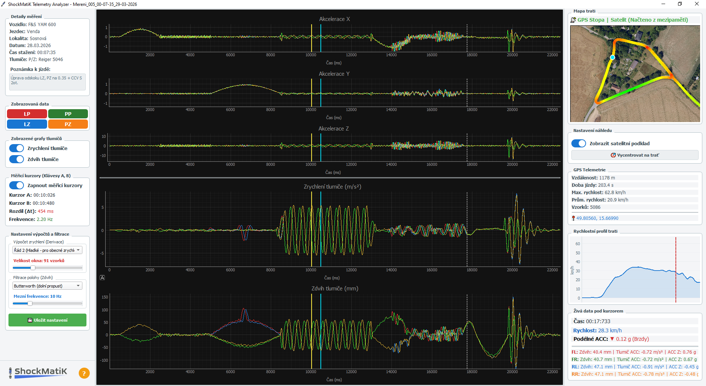

Komplexní měřicí systém pro precizní analýzu a ladění sportovních podvozků.
CZ
|
EN
Hardware: Z trati přímo do PC
Souprava zařízení pro záznam telemetrických dat.
4x Měřicí jednotka
Pomocí lineárních snímačů, připevněných paralelně k tlumičům, zaznamenávají jejich zdvih v čase a díky vestavěným akcelerometrům také snímají zrychlení odpružené hmoty ve třech osách.
Centrální řídicí jednotka
Bezdrátově řídí a synchronizuje všechny měřicí jednotky. Díky 25Hz GPS modulu navíc precizně zaznamenává polohu a rychlost na trati. Nasbíraná data následně přenese do PC pomocí USB nebo Wi-Fi.
| Vzorkovací frekvence | 200 Hz |
|---|---|
| Rozlišení A/D převodníku pro zdvih tlumiče | 16-bit (65536 úrovní) |
| Citlivost akcelerometru | až 16 G |
| Napájení | Integrovaný Li-Ion akumulátor (výdrž 12 hod) |
V základní sadě dodáváno s lineárními potenciometrickými snímači KPC1-250 s rozsahem 250 mm a kulovými zakončeními pro montáž paralelně k tlumiči. V současné době také probíhá testování využití kompaktních snímačů používaných v systémech ECAS.
| Dotykový LCD Displej | 4,3" 800x480 |
|---|---|
| GPS / Lokace | Integrovaný 25Hz GNSS přijímač |
| Integrovaná paměť | cca 17 tisíc minut záznamu |
| Konektivita | USB-C pro nabíjení a přenost dat + Wi-Fi |
| Napájení | Integrovaný Li-Ion akumulátor (výdrž 15 hod) |
S měřicími jednotkami komunikuje bezdrátově, čímž usnadňuje montáž. Celý systém je zcela izolován od palubní sítě vozu.


Software: ShockMatiK Suite
Sada nástrojů pro zpracování a analýzu telemetrických dat.
Project Manager
Desktopová aplikace pro Windows, která slouží ke stažení a organizaci naměřených dat z hardwarové jednotky. Umožňuje efektivní třídění dat do projektů a ukládání doplňujicích detailů k jednotlivým měřením.
Telemetry Analyzer
Integrovaný analytický nástroj pro intuitivní vizualizaci dat. Nabízí GPS mapování se satelitními snímky, precizní analýzu zrychlení samotných tlumičů, výpočty frekvence kmitání a pokročilé DSP filtry.
| Přenos dat | USB, Wi-Fi |
|---|---|
| Architektura ukládání | Lokální databáze, třídění dle týmů a vozidel |
| Metadata záznamu | Datum, čas, nastavení podvozku, povrch, poznámky |
| Kompatibilita OS | Windows 7 / 8 / 10 / 11 |
Aplikace slouží jako centrální mozek pro všechny testovací jízdy. Minimalizuje riziko ztráty dat a chaosu v souborech. Obsahuje modul pro stahování záznamů z hadwarové jednotky a umožňuje jejich třídění do logických celků (např. podle konkrétního vozu, jezdce nebo okruhu).
Ke každému jednotlivému záznamu můžete ručně zadat detailní poznámky – například aktuální nastavení komprese a odskoku tlumičů, typ povrchu, počasí nebo specifické události během jízdy (tvrdé brzdění, doskok z výjezdu atd.). Při pozdější analýze v Telemetry Analyzeru tak přesně víte, jaká mechanická úprava vedla k danému chování podvozku.
| GPS & Mapy | Zobrazení trasy na satelitních snímcích, rychlostní profil, G-Force heatmapa |
|---|---|
| Vyhodnocení dynamiky | Zrychlení pístnice tlumiče a duální kurzory pro výpočet frekvence (v Hz) |
| Vyhlazení dat | Aplikace matematických filtrů (Butterworth, Savitzky-Golay) pro odstranění šumu |
| Vizualizace | Interaktivní grafy s možností zoomování a snadného přepínání mezi senzory |
Jádro celého softwaru, optimalizované pro rychlou a přehlednou práci se surovými daty z trati. Z naměřeného zdvihu aplikace automaticky počítá okamžité zrychlení samotného tlumiče, takže v grafech přesně vidíte, jak rychle pístnice reaguje na kritické rázy (např. rolety, doskoky nebo prokluz kol při prudkém startu). Pro vyčištění křivky od nežádoucího šumu lze aplikovat pokročilé integrované DSP filtry.
Zásadní funkcí je plná integrace GPS telemetrie. Celou jízdu si můžete nechat vykreslit přímo na satelitní mapě s interaktivní heatmapou, která barevně indikuje okamžitou rychlost. Grafy telemetrie jsou navíc časově synchronizované s indikátorem pozice na mapě.


Pro dotazy a nezávaznou poptávku kontaktujte
info@shockmatik.com